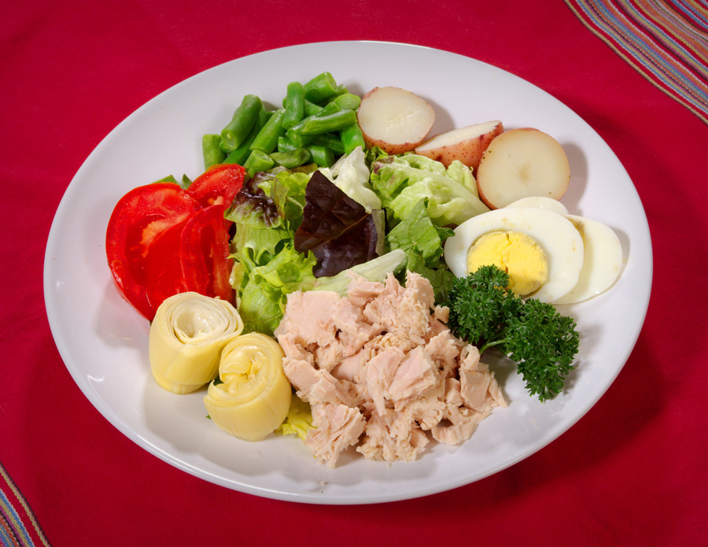

Salads and Vegetables
Each country has its own particular methods of salad making, and its own special combination of ingredients. In America, for example fruits and vegetables are frequently used together. Not only does this make a very vibrant and attractive salad, but also a most refreshing and appetizing one. Continental countries are particularly clever in their use of many different types of dressings to give both flavor and moistness to their salads.
Russian Salad
Read Reviews
The real russian salad always has a mixture of meat as well as vegetables. Although it can be tossed in mayonnaise it is generally served in oil and vinegar or in a Vinaigrette or French dressing.
You will need
- 8oz. diced cooked meat or poultry or use mixture
- 1lb. diced cooked vegetables
- 2 hard boiled eggs
- Mayonnaise or French dressing
Directions
- Mix the diced meat with the vegetables and toss in the dressing.
- Use a small amount of diced beetroot to give color to the cooked vegetables.
- Garnish with chopped hard-boiled eggs.